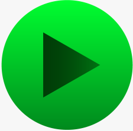
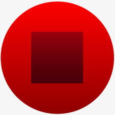

Track Selection
Track 1
Track 2
Track 3
Track 4
Track 5


Loading Model...
\title "Down by the Riverside" \subtitle "Arranged by: Brant Adams. B.M.I." \tempo 84 . \track "Soprano" \staff {score} \tuning piano \instrument acousticgrandpiano \ks G \lyrics "Oo _ _ _ _ _ _ Oo _ _ _ _ _ _ Oo _ _ _ _ _ Oo _ _" r.1 | r.2 :4 d3 e3 | g3{d}.2 :8 g3{-} a3 | b3{d}.2 :8 b3{-} r | \ts 2 4 :4 b3 a3 | \ts 4 4 g3.1 | :8 e3 d3 d3{- d}.2 :8 d3{-} r | \ts 2 4 :4 d3 e3 | \ts 4 4 g3{d}.2 :8 g3 a3 | :2 b3 a3 | g3.1 | \tempo 88 \ts 4 4 :2 g3{-} r | \track "Alto" \staff {score} \tuning piano \instrument acousticgrandpiano \ks G \lyrics "Oo _ _ _ _ Oo _ _ _ _ _ _ Oo _ _ _ _ Oo _ _ _" r.1 | r.2 :4 d4 e4 | g4.1 | g4{- d}.2 :8 g4{-} r | \ts 2 4 f4.2 | \ts 4 4 :2 e4 c4 | :8 c4 d4 d4{-}.2 :8 d4{-} r | \ts 2 4 :4 d4 e4 | \ts 4 4 g4{d}.2 e4.4 | e4.2 :4 e4 c4 | c4.1 | \tempo 88 \ts 4 4 :2 b3 r | \track "Tenor" \staff {score} \tuning piano \instrument acousticgrandpiano \ks G \clef F4 \lyrics "Oo _ _ _ Oo _ _" :1 r | r | r | r | \ts 2 4 r.2 | \ts 4 4 :1 r | r | \ts 2 4 :4 d4 c4 | \ts 4 4 b3.1 | :2 g3 a3 | ab3.1 | \tempo 88 \ts 4 4 :2 g3 r | \track "Bass" \staff {score} \tuning piano \instrument acousticgrandpiano \ks G \clef F4 \lyrics "Oo _ _ _ _ Oo _ _ _" :1 r | r | r | r | \ts 2 4 r.2 | \ts 4 4 :1 r | r | \ts 2 4 r.2 | \ts 4 4 :4 g3 f3 e3 d3 | c#3.2 :4 c3 d3 | eb3.1 | \tempo 88 \ts 4 4 :2 d3 r | \track "Piano Upper" \staff {score} \tuning piano \instrument acousticgrandpiano \ks G r.8 d6{d}.4 d6{-}.2 | r.8 d6{d}.4 d6{-}.2 | r.8 d6{d}.4 d6{-}.2 | r.8 :4 d6{d} d6{-} :4 (e6 b6) | \ts 2 4 :4 d5 a4{-} | \ts 4 4 r.8 d6{d}.4 d6{-}.2 | r.8 d6{d}.4 d6{-}.2 | \ts 2 4 d6{-}.2 | \ts 4 4 r.8 d6{d}.4 d6{-}.2 | r.4 :16 a4 b4 c#5 e5 f#5.4 :16 a4 c5 e5 f#5 | g5.4 :16 ab4 bb4 c5 eb5 :8{tu 3} f5 g5 ab5 :8{tu 3} bb5 c6 eb6 | \tempo 88 \ts 12 8 (a5{d} b5{d} d6{d}).2 a4{d}.2 | \staff {score} \tuning piano \instrument acousticgrandpiano \ks G r.8 :16 g5 a5 :8 f#5 d5 d5{-}.2 | r.8 :16 g5 a5 :8 f#5 d5 d5{-}.2 | r.8 :16 g5 a5 :8 f#5 d5 d5{-}.2 | r.8 :16 g5 a5 :8 f#5 d5 d5{-}.2 | \ts 2 4 f4.2 | \ts 4 4 r.8 :16 g5 a5 :8 d5 e5 e5{-}.2 | r.8 :16 a5 b5 :8 d5 e5 e5{-} a5 d6.4 | \ts 2 4 d6{-}.2 | \ts 4 4 r.8 :16 g5 a5 :8 f#5 d5 d5{-}.2 | r.1 | r.1 | \tempo 88 \ts 12 8 :8 g2 d3 g3 a3 b3 d4 a4 d4 b3 a3 g3 d3 | \staff {score} \tuning piano \instrument acousticgrandpiano \ks G :1 (d4 g4) | :1 (d4 g4) | :1 (d4 g4) | :1 (d4 g4) | \ts 2 4 :2 (d4{-} g4{-}) | \ts 4 4 :1 (e4 g4) | :1 (c4 d4 g4) | \ts 2 4 d4.2 | \ts 4 4 :2 (d4 g4) (e4 g4) | :16 b3 c#4 e4 g4 g4{-}.4 :16 a3 c4 d4 e4 :8 f#4 d4 | :16 ab3 c4 eb4 g4 (ab3{- d} c4{- d} eb4{- d} g4{- d}).2 | \tempo 88 \clef F4 \ts 12 8 :1 g2{d} |